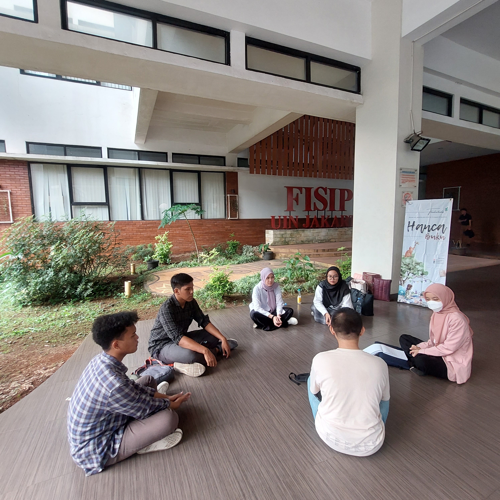
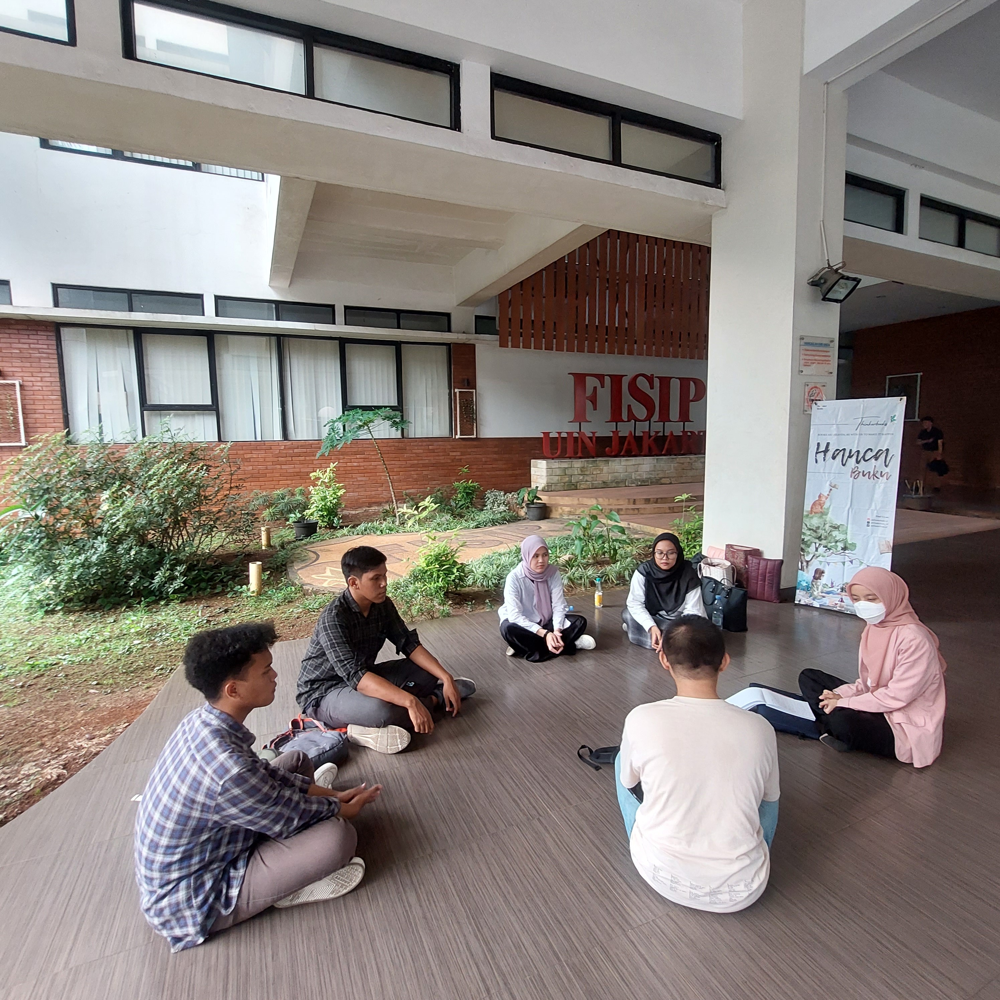

Good friends, good books, and a sleepy conscience: this is the ideal life.
― Mark Twain

 

Siapa sih kita?
Thinkerbooks adalah sebuah komunitas buku penggerak literasi yang ada di Ciputat, Tangerang Selatan. Dibangun untuk membumikan membaca dan menjadi tangan penyalur buku untuk masyarakat sekitar.
Our Activities
.png "Hanca Buku")
Hanca Buku
Hanca buku adalah sebuah kegiatan membaca buku secara bersama dengan senyap dan dilanjutkan sharing bersama mengenai buku yang telah di baca.
Bertujuan untuk membumikan budaya membaca di kalangan pelajar, terkhusus mahasiswa-mahasiswi UIN Jakarta. Namun, thinkerbook tetap terbuka bagi kalangan umum yang ingin datang membaca bersama ^_^
Hanca buku, biasanya dilaksanakan setiap hari Selasa di halaman Fakultas Ilmu Sosial dan Politik (FISIP). Tidak hanya di fakultas itu saja, Thinkerbooks mencoba untuk membumikan di semua fakultas yang ada di UIN Jakarta. Artinya, setiap kegiatan akan dilaksanakan di fakultas yang berbeda setiap pekannya, dengan catatan, tidak ada kendala.
.png "Book From Heaven")
Book From Heaven
Book From Heaven adalah sebuah program yang dibuat oleh Thinkerbooks sebagai kegiatan mendonasikan buku kepada suatu yayasan untuk membumikan baca. Program ini diinisiasi sebagai bentuk surga bagi semua orang yang turun diwakili dengan bentuk pemberian buku.